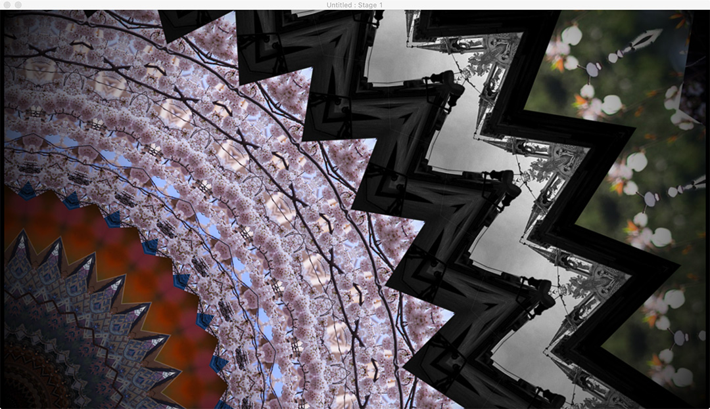

This is a memory kaleidoscope made of images from my Instagram.
With multiple photos, these represent parts of my life. When composing a memory kaleidoscope, it ends up like a trace of map of self portrait.

With multiple photos, these represent parts of my life. When composing a memory kaleidoscope, it ends up like a trace of map of self portrait.